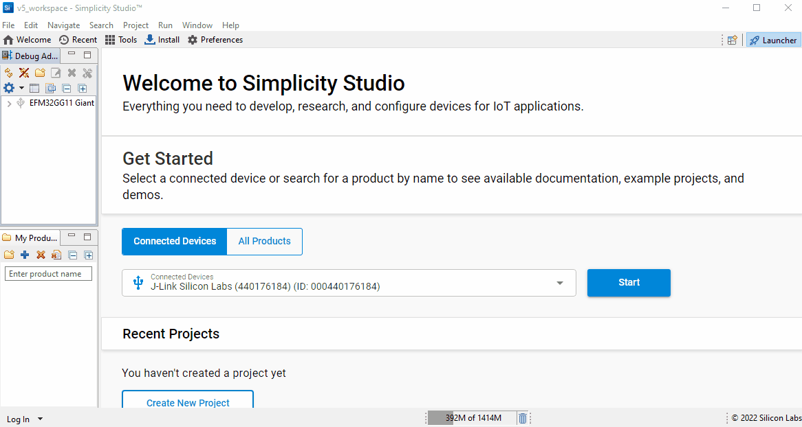

Simplicity Studio Development¶
This describes how to development C++ applications in the MLTK using Silicon Lab’s Simplicity Studio.
Using this guide, you can build C++ applications for Silicon Lab’s embedded platforms.
NOTES:
All of the MLTK C++ source code may be found at: mltk repo/cpp
Refer to the example applications documentation for more details about what comes with the MLTK
Alternatively, applications may be built for Windows/Linux and embedded targets using Visual Studio Code
Warning
Simplicity Studio 5 is required to run the MLTK
Install Tools¶
First, we need to install a few tools:
1) Install CMake¶
CMake is a build system utility used internally by the MLTK.
Install CMake and ensure it is available on the command PATH
More details here: https://cmake.org/install
2) Install 7-Zip¶
7-Zip is a file archiver with a high compression ratio.
Several of the assets downloaded by the MLTK are compressed in this format.
More details here: https://www.7-zip.org/download.html
3) Install Python¶
Install Python 3.7, 3.8, 3.9 or 3.10 64-bit and ensure it is available on the command PATH
More details here: https://www.python.org/downloads
4) Install GIT¶
If necessary, install Git:
https://git-scm.com/downloads
5) Install Simplicity Studio 5¶
Download and install Simplicity Studio 5:
https://www.silabs.com/developers/simplicity-studio
Warning
Ensure Simplicity Studio is up-to-date before continuing
Install MLTK¶
Next, we need to install the MLTK:
1) Clone the MLTK repository¶
# Clone the MLTK GIT repository
git clone https://github.com/siliconlabs/mltk.git
Then navigate to the MLTK repository directory
cd mltk
2) Run the install script¶
python .\install_mltk.py
python3 ./install_mltk.py
3) Activate the MLTK Python virtual environment¶
Activate the MLTK’s Python virtual environment:
.\.venv\Scripts\activate.bat
source ./.venv/bin/activate
After activation, the mltk command should be available on the command-line:
mltk --help
Install the MLTK into the Gecko SDK¶
The Gecko SDK is the main software stack used by Silicon Lab’s embedded targets. The MLTK clones a local copy of the Gecko SDK to mltk/cpp/shared/gecko_sdk. We need to install the MLTK as an “extension” to the locally cloned Gecko SDK so that the MLTK applications are accessible in Simplicity Studio.
To do this, issue the following command:
mltk build gsdk_mltk_extension
Add the MLTK Gecko SDK to Simplicity Studio¶
After building the GSDK MLTK extension, add the locally cloned Gecko SDK at mltk/cpp/shared/gecko_sdk to Simplicity Studio.
From Simplicity Studio,
On top toolbar, click: Window
The click Preferences
The on the sidebar, expand the Simplicity Studio entry
Click the SDKs entry
Click the Add SDK… button
Populate the Location with the path to the locally cloned GSDK, e.g.
<mltk repo root>/cpp/shared/gecko_sdk/v4.0.2Click: OK
If prompted, click the Trust button to “trust” the locally cloned MLTK GSDK
Click: Apply and Close
At this point, the MLTK Gecko SDK Suite is now available in Simplicity Studio 5.
From the Launcher, select your connected device, then select the Preferred SDK to be: MLTK Gecko SDK Suite
The MLTK example applications should now be available for project creation.

Refer to the Simplicity Studio 5 User Guide for more details about building and running projects.
Hint
When creating a new project, if you click the Link to sources option, then you can directly edit the MLTK C++ sources from Simplicity Studio. Otherwise, the MLTK C++ sources will be copied to your Simplicity Studio project directory.
Example Applications¶
Refer to the Examples Documentation for more details about the applications that come with the MLTK.